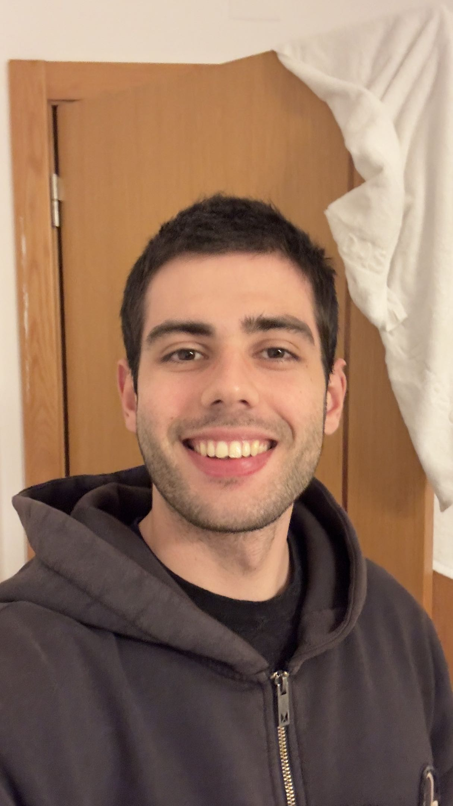

Hi! I'm Rodrigo. By 23, I'd already explored several fields — economics, management, computer science, and architecture — and I don't regret any of it.
Each path taught me something about who I am and what I actually want.
I didn't fall in love with web design. I fell in love with who I was becoming, and web design was there for all of it.
I'm deeply curious by nature. Psychology, art, the way things connect — these aren't just interests, they're the lens through which I see the world and approach my work. I believe nothing has to be perfect to be meaningful.
What matters is being fully present in what you do — and letting the rest follow.